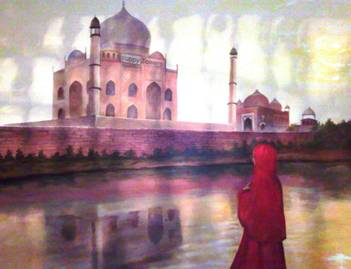

Mystified 11th December 2008
31 were up for it;
Yupmeister, Mid Week Tone, Pedro, Richee-Lionel, Granpop Bill, Keithee's
up for it, Stubbee, JayCee, Dasher, Malc Jay, Craigee 50/50, DCeen, McCeen,
Spikelett, Ax / Wilton (Chris Rushton), Mr Tahoohigh, Heavy Steve Machine,
Scottee Free, Brockee, Jacko, Triglett, Mo who, Rob Sparklette, Matt Silver
Bear, Matt Nice one, Lance, Marky, Stew art, Moonbeam, Nige (Noel), John,
with Dan the man failing to appear for the second year running.
Beginning with a presentation by Mid week Tone to Yup for his efforts
throughout the year, (many thanks chaps), this year’s mystery unfolded with Ronnie
taking the reins and setting off from the Westbury at 5.15, having previously collected
some of the rabble at Stoke and Penkhull.
Heading off in an easterly direction, Heavy Steve Machine and one or two
other squarrites smugly cheered at the prospect of becoming this year’s No bell
Prize winner. If only they’d heeded the
numerous red herring warnings. Groans
from the rest died down as the haunting mystery tour music began in the
background and the excitement increased.
Around
20 minutes later Ronnie dropped down off the A50 into Blythe Bridge, slowing
down at the welcoming warmly lit Isaac Walton, (site of a red herring photo), but
only to continue past and on to an deceptively lit Hunter at Creswell. The Hunter had been the CAMRA pub of the
month back in July, but had ‘mysteriously’ closed down the following month,
putting a squarrite visit into jeopardy.
Fortunately it had re-opened by kind permission of the Titanic Brewery
in November and a selection of Titanic pictures, including miss whiplash and
miss luscious, I know them well, adorned the walls. Arrangements had been made with Titanic
director, Dave Bott, to provide their own specialist pork pies, spuds-u-like,
and sandwiches, just to put a lining on our stomachs ahead of a drinking
bout. Ronnie proceeded to put 2 or 3
linings on his stomach, just in case he never got a curry. As if !
The first pint was included in the trip and the Bishops Farewell and Titanic
Iceberg, which had been bought in as requested, produced a huge smile on Mr
Tahoohigh’s face, who could quite happily have settled in for the night. Not a bad idea in hind sight. An hour on the clock, and several linings
donned later, we were back on the bus and heading back to the A50 and on to The
Vernon Young at
Landlord, Mike O’Connell, had made arrangements for Golden Pippin to be
set up for us, and complimented the ales with yet another tray of
sandwiches. How many more linings we
could fit in was of great concern.
The
Around 8ish, Spikelet was given the nod to issue the rounding up whistle
to call the clan back onto the coach for the ‘No bell’ award. Heavy Steve was put out of his misery and
awarded the red herring award, having fallen foul of several clues taken from
The Green Man at Milwich, which had been considered both this year and last
year. Clues included the red bell behind
the bar and breakfast tele ie GM tv. Too
far fetched??
The top prize this year fell yet again to a chilli draw from the balti
dish by Ronnie. The 2 finalists, Scottee
and Malc, took a deep breath as the chilli was drawn, with Scottee taking the
£15 first prize. Not bad considering
Richee had chosen Uttoxeter on his behalf.
The
engine revved up and we were off to the undisclosed indian. We slipped into Tutbury, up the high street
and stopped outside the Mughal. An
impressive entrance with murals (one of the clues) adorning the walls, and a river
running along the floor, literally. High
hopes soon sank, as we were informed that they’d suffered a water burst,
resulting in no heating; the central fountain being out of commission, and
water seeped from under the floor. A
‘wet floor’ sign did little to avoid the slipping and sliding as we made our
way to the top table, realising why there was no-one else in the restaurant.
The food orders were passed to Asif, the restaurant manager, as we took
our seats. As the popodoms began to
emerge from the kitchens, Asif approached, apologising for the non-availability
of salmon for Heavy Steve’s salmon balti.
It wasn’t to be Heavy’s night.
The cobras flowed, unlike the fountain, and Keithee began to order the
wine. ‘A bottle of your finest no 18’, was
served and was immediately given a flat zero out of ten by Triglette. ‘We’ll have a no 21 instead then’, requested
Keithee, but unfortunately they had run out. In fact they’d run out of all wine
and only had the ‘acrid’ bottle of no 18 which was bought back to the table.
There was a long wait as we patiently waited for the mixed starters
which eventually trickled out in dribs and drabs. Several trips were attempted to the toilets, where
the ‘checked every half an hour’ board was last signed off in 1752 by Sir John
Vernon of
Yup called the troops to order and began the awards ceremony, with a Lord
Charles look-a–like Moonbeam assisting with the presentations. ‘Silly ass’ he muttered from time to time,
and ‘Where’s me gottle of gear?’
Yup began with a welcome to the youngsters on the tables and the far too
many to mention owduns, along with Stew-Art who was joining us for the first
time before emigrating to another country where it always rains and they don’t
sell beer. Why?
The ‘Most memorable trip’ award went to DCeen for not getting shirty
with JayCee when he threw his beer over his six packs in
One final ‘booby’ prize, the ‘Last to pay’ award was given to John
Hotdog Howard amid a hail of boos and hisses, before Yuppy presented some
research figures regarding the clubs history.
Of note was the fact that the squarry club had began in 1990, and that 2010
would therefore be a special anniversary mystery event. By his calculations approximately 216 squarry
nights had taken place so far, with around 432 popodoms being eaten by each
person and 1 chicken chat being eaten by Pedro.
Around 648 pints had been quaffed by each person, with Keithee drinking
around 216 bottles of red wine, purely on his own (of course).
A squarry shirt, a fitting tribute, was presented to life long member Mo
Who, who gave an emotional farewell speech to his ‘family’ as he confirmed he
was emigrating to
All we needed now was a great curry to finish the evening off. Granpop Bill, amongst others, had saved
himself, refusing to nibble any pork pies or butties offered at the pubs. The eight pints of ale were superfluous. Patience began to wear thin as an eternity
passed before the first few meals were bought out and placed on an adjacent
table to chill before being distributed.
Some of the rices were handed out and several other dishes passed around
haphazardly in an attempt to appease us.
Ronnie attempted to break open a portion of frozen rice he’d found and
others ate their curries without rice. In
all, the service was atrocious and by far the worst ever Indian experienced by
the squarry club. We didn’t wait for
coffees and began a titanic struggle to settle the bill. A bill of several hundred was instantly dismissed
and eventually a fiver a head was accepted as a take it or leave it final offer
to cover everything.
There was a mad rush to the local chippie which shut its door when it
saw Nige (noel) approaching. Silver Bear
suddenly gained several drooling best buddies until a local pub came into sight
offering a chance to catch a final night cap, or two.
George Formby entertained on the return leg home, or was it a
Anyone free to organise next years??
Yours as ever
Yupmeister
(enjoy yer baltis ………….. If you get one)